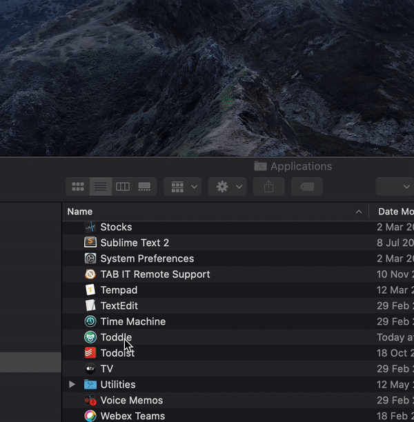
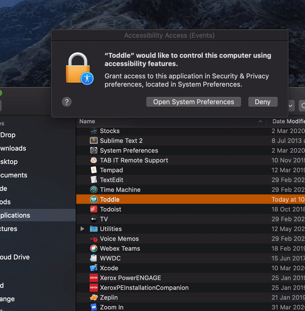

Download and unzip, then move into your Applications folder.
Hold the 'control' key and click on Toddle, then keep holding the 'control' key and select 'Open'.

When prompted, you need to open System Preferences and allow Toddle to control your computer. This is required in order to disable the keyboard and mouse — nothing else!
